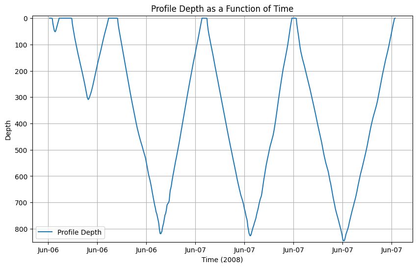

seagliderOG1 demo
The purpose of this notebook is to demonstrate the functionality of seagliderOG1 to convert from Seaglider basestation files to OG1 format.
OG1 format is a newly agreed format (since June 2024) for glider data sets from various platforms (e.g., Seaglider, Slocum, Seaexplorer). It lives on github here: (https://github.com/OceanGlidersCommunity/OG-format-user-manual).
OG1 manual: https://oceangliderscommunity.github.io/OG-format-user-manual/OG_Format.html
The test case is to convert sg015 data from the Labrador Sea in September 2004.
The demo is organised to show
Conversion of a single dive cycle (single
p*.ncfile)Conversion for a folder of local dive-cycle files (full mission of
p*.ncfiles)Download from remote server + conversion (directory with full mission of
p*.ncfiles)
Options are provided to only load e.g. 10 files, but note that OG1 format expects a full mission.
[1]:
import pathlib
import sys
script_dir = pathlib.Path().parent.absolute()
parent_dir = script_dir.parents[0]
sys.path.append(str(parent_dir))
sys.path.append(str(parent_dir) + '/seagliderOG1')
print(parent_dir)
print(sys.path)
### silence future warnings
import warnings
warnings.simplefilter(action='ignore', category=FutureWarning)
import xarray as xr
import os
from seagliderOG1 import readers, writers, plotters
from seagliderOG1 import convertOG1, vocabularies
/home/runner/work/seagliderOG1/seagliderOG1
['/home/runner/micromamba/envs/TEST/lib/python314.zip', '/home/runner/micromamba/envs/TEST/lib/python3.14', '/home/runner/micromamba/envs/TEST/lib/python3.14/lib-dynload', '', '/home/runner/micromamba/envs/TEST/lib/python3.14/site-packages', '/home/runner/work/seagliderOG1/seagliderOG1', '/home/runner/work/seagliderOG1/seagliderOG1/seagliderOG1']
[2]:
# Specify the path for writing datafiles
data_path = os.path.join(parent_dir, 'data')
Reading basestation files
This has three ways to load a glider dataset.
Load an example dataset using seagliderOG1.fetchers.load_sample_dataset
Alternatively, use your own with e.g. ds = xr.open_dataset('/path/to/yourfile.nc')
Load single sample dataset
[3]:
ds = readers.load_sample_dataset()
ds
[3]:
<xarray.Dataset> Size: 27kB
Dimensions: (sg_data_point: 53, gps_info: 3, gc_event: 7,
trajectory: 1)
Coordinates:
longitude (sg_data_point) float64 424B ...
latitude (sg_data_point) float64 424B ...
ctd_time (sg_data_point) datetime64[ns] 424B ...
ctd_depth (sg_data_point) float64 424B ...
* trajectory (trajectory) int32 4B 1
Dimensions without coordinates: sg_data_point, gps_info, gc_event
Data variables: (12/337)
surface_curr_north float64 8B ...
surface_curr_east float64 8B ...
start_of_climb_time float64 8B ...
sg_cal_volmax float64 8B ...
sg_cal_vbd_min_cnts int32 4B ...
sg_cal_vbd_max_cnts int32 4B ...
... ...
buoyancy (sg_data_point) float64 424B ...
SBE43_qc |S1 1B ...
GPSE_qc |S1 1B ...
GPS2_qc |S1 1B ...
GPS1_qc |S1 1B ...
CTD_qc |S1 1B ...
Attributes: (12/59)
date_modified: 2014-03-11T20:03:32Z
quality_control_version: 1.1
base_station_micro_version: 3897
time_coverage_resolution: PT1S
geospatial_vertical_max: 51.62461963987948
sea_name: North Atlantic Ocean
... ...
disclaimer: Data provided AS-IS.
geospatial_vertical_positive: no
date_created: 2014-03-11T20:03:32Z
geospatial_vertical_units: meter
dive_number: 1
history: Processing start:\n20:13:32 11 Mar 2014 ...Load datasets from a local directory
[4]:
# Specify the input directory on your local machine
input_dir = data_path + '/demo_sg005' ### chose the input directory with your data
# Load and concatenate all datasets in the input directory
# Optionally, specify the range of profiles to load (start_profile, end_profile)
list_datasets = readers.load_basestation_files(input_dir, start_profile=0, end_profile=5)
# Where list_datasets is a list of xarray datasets. A single dataset can be accessed as
ds = list_datasets[0]
Scanning files: 100%|██████████| 5/5 [00:00<00:00, 40.72file/s]
Loading datasets: 100%|██████████| 5/5 [00:00<00:00, 41.66file/s]
[5]:
ds = readers.load_sample_dataset()
Load datasets from a remote directory (URL)
[6]:
# Specify the server where data are located
#server = "https://www.ncei.noaa.gov/data/oceans/glider/seaglider/uw/033/20100903/"
# Load and concatenate all datasets from the server, optionally specifying the range of profiles to load
#list_datasets = readers.load_basestation_files(server, start_profile=1, end_profile=10)
Convert to OG1 format
Process:
For one basestation dataset, split the dataset by dimension (
split_ds)Transform into OG1 format: dataset with dims
sg_data_pointChange the dimension to
N_MEASUREMENTSRename variables according to
vocabularies.standard_namesAssign variable attributes according to
vocabularies.vocab_attrs. (Note: This could go wrong since it makes assumptions about the input variables. May need additional handling.)
Add missing mandatory variables:
From
split_ds[(gps_info,)], add theLATITUDE_GPS,LONGITUDE_GPSandTIME_GPS(Note: presentlyTIME_GPSis stripped before saving, butTIMEvalues containTIME_GPS)Create
PROFILE_NUMBERandPHASECalculate
DEPTH_Zwhich is positive up
Update attributes for the file.
Combines
creatorandcontributorfrom original attributes intocontributorAdds
contributing_institutionsbased oninstitutionReformats time in
time_coverage_*andstart_time–>start_dateAdds
date_modifiedRenames
comments–>history,site–>summaryAdds
title,platform,platform_vocabulary,featureType,Conventions,rtqc_method*according to OceanGliders formatRetains
naming_authority,institution,project,geospatial_*as OG attributesRetains extra attributes:
license,keywords,keywords_vocabulary,file_version,acknowledgement,date_created,disclaimer
Future behaviour to be added:
Retain the variables starting with
sg_caland check whether they vary over the mission (shouldn’t)Add sensors, using information in the
split_dswith no dimensionsNeed (from sg_cal_constants:
sg_calplusvolmax,vbd_cnts_per_cc,therm_expan,t_*,mass,hd_*,ctcor,cpcor,c_*,abs_compress,a,Tcor,Soc,Pcor,Foffset)Maybe also
reviewed,magnetic_variation(which will change with position),log_D_FLARE,flight_avg_speed_northandflight_avg_speed_eastalso with_gsm,depth_avg_curr_northanddepth_avg_curr_eastalso with_gsm,wlbb2f- means sensorsg_cal_mission_titlesg_cal_id_strcalibcomm_oxygencalibcommsbe41means ??hdm_qcglider
Convert a single (sample) dataset
[7]:
# Loads one dataset (p0150500_20050213.nc)
ds = readers.load_sample_dataset()
ds_OG1, var_list = convertOG1.convert_to_OG1(ds)
# Check the results - uncomment the following lines to either generate a plot or show the variables.
plotters.plot_profile_depth(ds_OG1)
Processing datasets: 0%| | 0/1 [00:00<?, ?dataset/s]
No conversion information found for micromoles/kg to micromoles/kg
No conversion information found for cm s-1 to cm s-1
No conversion information found for micromoles/kg to micromoles/kg
Variables removed from dataset: ['eng_depth', 'eng_elaps_t', 'eng_elaps_t_0000', 'latitude_gsm', 'longitude_gsm', 'glide_angle_gsm', 'horz_speed_gsm', 'north_displacement_gsm', 'east_displacement_gsm', 'speed_gsm', 'vert_speed_gsm', 'dive_num_cast', 'density']
Processing datasets: 100%|██████████| 1/1 [00:00<00:00, 2.18dataset/s]
Adding variables with dimension 'sg_data_point' and time variable 'ctd_time'.
The following dimensions were not merged into the new dataset: {'gc_event', 'gps_info'}
If instrument data is missing make sure it's dimension follows the naming convention of '<instrument>_data_point'
from the ds.attrs['instrument'] list.
Adding technical specifications for 'Wetlabs BB2FL-VMT' (sensor key: 'wlbb2f') from OG1_sensor_attrs.yaml
Adding technical specifications for 'SeaBird SBE 41 CTD' (sensor key: 'sbe41') from OG1_sensor_attrs.yaml
Adding technical specifications for 'Seabird SBE43F' (sensor key: 'sbe43') from OG1_sensor_attrs.yaml
Warning: No calibration info found for sensor 'wlbb2f'. Available calibration variables: ['sg_cal_calibcomm_oxygen', 'sg_cal_calibcomm']
The following HDM parameters were found: ['VBD_MIN_CNTS', 'VBD_CNTS_PER_CC', 'VBD_CC_PER_CNTS', 'MASS', 'VOLMAX', 'C_VBD', 'HD_A', 'HD_B', 'HD_C']
Warning: The following potential HDM parameters were not found in the datasets: ['VBD_BIAS']

[8]:
### print the list of inital variables of the dataset
var_list
[8]:
['log_PITCH_MAX',
'log_SIM_PITCH',
'eng_wlbb2f_fluorCount',
'log_C_PITCH',
'eng_tempFreq',
'buoyancy',
'log__CALLS',
'sg_cal_roll_min_cnts',
'gc_depth',
'log_ROLL_CNV',
'sg_cal_volmax',
'sg_cal_c_j',
'log_PITCH_ADJ_GAIN',
'log_KALMAN_X',
'temperature_raw',
'log_TGT_LATLONG',
'horz_speed_gsm',
'log_D_NO_BLEED',
'log_PITCH_ADJ_DBAND',
'gc_st_secs',
'log_RAFOS_PEAK_OFFSET',
'log_DEEPGLIDER',
'eng_wlbb2f_VFtemp',
'log_D_PITCH',
'sg_cal_pump_power_slope',
'log_D_TGT',
'log_COMPASS_DEVICE',
'sg_cal_calibcomm',
'log_PRESSURE_SLOPE',
'eng_wlbb2f_redRef',
'log_ESCAPE_HEADING_DELTA',
'sg_cal_c_i',
'sg_cal_Pcor',
'sbe43_dissolved_oxygen',
'eng_rollCtl',
'log_T_GPS_CHARGE',
'log_DIVE',
'log_KALMAN_USE',
'time',
'log_ROLL_MIN',
'pressure',
'log__SM_DEPTHo',
'log_SURFACE_URGENCY_FORCE',
'depth',
'surface_curr_east',
'log_ROLL_ADJ_DBAND',
'gc_vbd_ad',
'trajectory',
'log_COMM_SEQ',
'log_TGT_RADIUS',
'log_PHONE_DEVICE',
'log_N_FILEKB',
'log_FILEMGR',
'log_SMARTDEVICE2',
'log_USE_ICE',
'log_DEVICE6',
'sg_cal_vbd_max_cnts',
'log_CFSIZE',
'depth_avg_curr_north',
'log_ESCAPE_HEADING',
'log_PITCH_AD_RATE',
'log_SEABIRD_T_G',
'log_T_WATCHDOG',
'longitude_gsm',
'sbe43_dissolved_oxygen_qc',
'gc_ob_vertv',
'log_CF8_MAXERRORS',
'log_TCM_PITCH_OFFSET',
'log_INT_PRESSURE_SLOPE',
'log_IRIDIUM_FIX',
'sg_cal_vbd_min_cnts',
'log_gps_time',
'sg_cal_ctcor',
'log_PITCH_MAXERRORS',
'eng_rollAng',
'directives',
'log_XPDR_PINGS',
'log_C_ROLL_CLIMB',
'conductivity',
'gc_roll_ad',
'log_SMARTDEVICE1',
'sg_cal_A',
'sbe43_results_time',
'SBE43_qc',
'eng_sbe43_O2Freq',
'speed_qc',
'log_HEAD_ERRBAND',
'log_DEVICE5',
'log_DEVICE2',
'sg_cal_t_h',
'log_C_ROLL_DIVE',
'log_D_OFFGRID',
'log_VBD_CNV',
'log_PITCH_VBD_SHIFT',
'eng_pitchCtl',
'depth_avg_curr_east_gsm',
'longitude',
'sigma_theta',
'log_VBD_MAX',
'log_SM_CCo',
'log_ROLL_AD_RATE',
'log_ROLL_DEG',
'temperature_qc',
'log_T_ABORT',
'log_T_NO_W',
'gc_vbd_secs',
'log_GPS_DEVICE',
'log_HD_A',
'log_RELAUNCH',
'log_PITCH_TIMEOUT',
'log_DEEPGLIDERMB',
'log_T_MISSION',
'east_displacement_gsm',
'log_RAFOS_CORR_THRESH',
'log_DEVICE3',
'start_of_climb_time',
'log_CAPUPLOAD',
'log_SENSORS',
'sg_cal_mass',
'log_GPS2',
'sg_cal_hd_a',
'log_HEAPDBG',
'log_T_TURN',
'log_ALTIM_BOTTOM_TURN_MARGIN',
'log_SENSOR_SECS',
'log_DATA_FILE_SIZE',
'flight_avg_speed_east',
'log_SEABIRD_T_J',
'log_VBD_MIN',
'log_UPLOAD_DIVES_MAX',
'log_DEVICE4',
'sg_cal_Soc',
'sg_cal_t_i',
'reviewed',
'log_KALMAN_Y',
'eng_condFreq',
'sg_cal_E',
'log_TCM_TEMP',
'gc_vbd_i',
'log_ALTIM_PING_DELTA',
'GPS1_qc',
'log_ALTIM_TOP_PING_RANGE',
'log_SM_GC',
'gc_pitch_secs',
'log_ALTIM_TOP_TURN_MARGIN',
'log_gps_lon',
'sg_cal_C',
'log_DEVICE_MAMPS',
'vert_speed_gsm',
'sg_cal_mission_title',
'eng_depth',
'gc_vbd_ctl',
'log_GPS',
'log_R_PORT_OVSHOOT',
'log_AD7714Ch0Gain',
'log_GLIDE_SLOPE',
'log_APOGEE_PITCH',
'log_MHEAD_RNG_PITCHd_Wd',
'log_VBD_PUMP_AD_RATE_APOGEE',
'wlbb2f',
'log_PITCH_CNV',
'dissolved_oxygen_sat',
'eng_pitchAng',
'log_ALTIM_SENSITIVITY',
'log_VBD_TIMEOUT',
'eng_elaps_t',
'log_ALTIM_PING_DEPTH',
'depth_avg_curr_north_gsm',
'log_ROLL_MAX',
'log_HUMID',
'eng_elaps_t_0000',
'log_TGT_DEFAULT_LON',
'log_HD_C',
'sg_cal_Foffset',
'log_PITCH_GAIN',
'latitude_gsm',
'log_T_GPS_ALMANAC',
'log_TGT_AUTO_DEFAULT',
'gc_pitch_ctl',
'flight_avg_speed_north_gsm',
'sound_velocity',
'salinity',
'log_T_TURN_SAMPINT',
'latitude',
'log_TGT_DEFAULT_LAT',
'log_ROLL_MAXERRORS',
'CTD_qc',
'log_D_GRID',
'gc_pitch_i',
'log_gps_lat',
'surface_curr_qc',
'east_displacement',
'glide_angle',
'north_displacement',
'log_SPEED_LIMITS',
'sbe43',
'magnetic_variation',
'log_SM_CC',
'log_MOTHERBOARD',
'log_DEVICE1',
'log_ALTIM_BOTTOM_PING_RANGE',
'log_KALMAN_CONTROL',
'log_SURFACE_URGENCY',
'sg_cal_cond_bias',
'temperature_raw_qc',
'eng_wlbb2f_redCount',
'log_ALTIM_FREQUENCY',
'log_ERRORS',
'glide_angle_gsm',
'sg_cal_t_g',
'log_D_SURF',
'GPSE_qc',
'log_R_STBD_OVSHOOT',
'conductivity_qc',
'log_XPDR_DEVICE',
'log_SEABIRD_C_H',
'log_CALL_WAIT',
'eng_wlbb2f_blueRef',
'log_ALTIM_PULSE',
'log_INT_PRESSURE_YINT',
'log__XMS_NAKs',
'depth_avg_curr_qc',
'log_D_CALL',
'sg_cal_calibcomm_oxygen',
'flight_avg_speed_north',
'glider',
'log_ID',
'log_T_RSLEEP',
'flight_avg_speed_east_gsm',
'log_KERMIT',
'log_SEABIRD_C_J',
'log_N_GPS',
'log_D_FINISH',
'log_USE_BATHY',
'sg_cal_pitch_min_cnts',
'log_UNCOM_BLEED',
'sg_cal_cpcor',
'log_AH0_10V',
'sg_cal_QC_cond_spike_depth',
'eng_head',
'log_ALTIM_TOP_PING',
'log_ALTIM_TOP_MIN_OBSTACLE',
'log_TGT_NAME',
'sg_cal_pitch_max_cnts',
'log_SEABIRD_T_H',
'log_CALL_NDIVES',
'log_24V_AH',
'log_RHO',
'log_T_GPS',
'log_PITCH_DBAND',
'avg_latitude',
'sigma_t',
'log_SMARTS',
'sg_cal_vbd_cnts_per_cc',
'log_SEABIRD_C_G',
'gc_data_pts',
'speed',
'log_CALL_TRIES',
'log_AH0_24V',
'GPS2_qc',
'gc_pitch_ad',
'gc_end_secs',
'sg_cal_B',
'north_displacement_gsm',
'log_10V_AH',
'sg_cal_hd_c',
'log_MISSION',
'log_VBD_BLEED_AD_RATE',
'log_VBD_PUMP_AD_RATE_SURFACE',
'log_GPS1',
'log_SURFACE_URGENCY_TRY',
'log_N_NOSURFACE',
'log_PITCH_MIN',
'log_MASS',
'log_SPEED_FACTOR',
'sg_cal_roll_max_cnts',
'conductivity_raw_qc',
'log_SEABIRD_T_I',
'sg_cal_QC_temp_spike_depth',
'log_C_VBD',
'log_ROLL_ADJ_GAIN',
'log_CAPMAXSIZE',
'log_NAV_MODE',
'temperature',
'log_D_SAFE',
'sg_cal_id_str',
'gc_roll_i',
'salinity_raw',
'log_CAP_FILE_SIZE',
'gc_gcphase',
'log_DEVICES',
'log_SIM_W',
'eng_wlbb2f_blueCount',
'theta',
'log_SENSOR_MAMPS',
'log__XMS_TOUTs',
'log_VBD_MAXERRORS',
'sg_cal_pump_power_intercept',
'log__SM_ANGLEo',
'log_FERRY_MAX',
'depth_avg_curr_east',
'log_RAFOS_HIT_WINDOW',
'sg_cal_c_h',
'log_HEADING',
'salinity_qc',
'conductivity_raw',
'horz_speed',
'log_MAX_BUOY',
'log_D_FLARE',
'salinity_raw_qc',
'log_RAFOS_DEVICE',
'speed_gsm',
'log_SEABIRD_C_I',
'log_TCM_ROLL_OFFSET',
'log_P_OVSHOOT',
'log_COMPASS_USE',
'log_PRESSURE_YINT',
'log_ROLL_TIMEOUT',
'density',
'eng_vbdCC',
'log_DEVICE_SECS',
'sg_cal_pump_rate_slope',
'log_TT8_MAMPS',
'sg_cal_pump_rate_intercept',
'log_ICE_FREEZE_MARGIN',
'log_T_DIVE',
'log_D_ABORT',
'sg_cal_hd_b',
'log_HD_B',
'hdm_qc',
'gc_roll_secs',
'ctd_time',
'vert_speed',
'log_N_NOCOMM',
'sg_cal_c_g',
'sbe41',
'log_FIX_MISSING_TIMEOUT',
'log_VBD_DBAND',
'surface_curr_north',
'sg_cal_t_j',
'ctd_depth',
'log_COURSE_BIAS']
[9]:
# Print to screen a table of attributes
plotters.show_contents(ds_OG1,'attrs')
information is based on xarray Dataset
[9]:
| Attribute | Value | DType | |
|---|---|---|---|
| 0 | title | OceanGliders trajectory file | str |
| 1 | id | sg005_20080606T180738_delayed | str |
| 2 | platform | sub-surface gliders | str |
| 3 | platform_vocabulary | https://vocab.nerc.ac.uk/collection/L06/curren... | str |
| 4 | naming_authority | edu.washington.apl | str |
| 5 | institution | School of Oceanography\nUniversity of Washingt... | str |
| 6 | geospatial_lat_min | 61.41415 | ndarray |
| 7 | geospatial_lat_max | 61.41549829808199 | ndarray |
| 8 | geospatial_lon_min | -8.279016666666667 | ndarray |
| 9 | geospatial_lon_max | -8.273983333333332 | ndarray |
| 10 | geospatial_vertical_min | 0.0 | ndarray |
| 11 | geospatial_vertical_max | 51.40003042836588 | ndarray |
| 12 | time_coverage_start | 20080606T180256 | str |
| 13 | time_coverage_end | 20080606T183207 | str |
| 14 | site | Multiple transects of Faroe-Iceland Ridge uppe... | str |
| 15 | project | Iceland Scotland Ridge June 2008 | str |
| 16 | contributor_name | Charlie Eriksen, Peter Rhines | str |
| 17 | contributor_role | PI, Principal investigator | str |
| 18 | contributor_role_vocabulary | http://vocab.nerc.ac.uk/search_nvs/W08, | str |
| 19 | contributor_email | eriksen@uw.edu, | str |
| 20 | contributing_institutions | University of Washington - School of Oceanogra... | str |
| 21 | contributing_institutions_vocabulary | https://edmo.seadatanet.org/report/1434, | str |
| 22 | contributing_institutions_role | PI, | str |
| 23 | contributing_institutions_role_vocabulary | http://vocab.nerc.ac.uk/collection/W08/current/, | str |
| 24 | uri | 9e33a22e-a959-11e3-b35f-0026bb609360 | str |
| 25 | rtqc_method | No QC applied | str |
| 26 | rtqc_method_doi | n/a | str |
| 27 | comment | Processing start:\n20:13:32 11 Mar 2014 UTC: I... | str |
| 28 | start_date | 20080606T180738 | str |
| 29 | date_created | 20140311T200332 | str |
| 30 | featureType | trajectoryProfile | str |
| 31 | Conventions | CF-1.10,OG-1.0 | str |
| 32 | date_modified | 20260529T094955 | str |
| 33 | keywords_vocabulary | NASA/GCMD Earth Science Keywords Version 6.0.0.0 | str |
| 34 | acknowledgment | National Science Foundation, OCE Division, Gra... | str |
| 35 | disclaimer | Data provided AS-IS. | str |
| 36 | keywords | Water Temperature, Conductivity, Salinity, Den... | str |
| 37 | license | These data may be redistributed and used witho... | str |
| 38 | file_version | 2.71 | float32 |
| 39 | contributer_email | null@null.com | str |
[10]:
# Print to screen a table of the variables and variable attributes
plotters.show_contents(ds_OG1,'variables')
information is based on xarray Dataset
[10]:
| dims | units | comment | standard_name | dtype | |
|---|---|---|---|---|---|
| name | |||||
| BBP470 | N_MEASUREMENTS | As reported by instrument | float32 | ||
| BBP470_REF | N_MEASUREMENTS | As reported by instrument | float32 | ||
| BBP700 | N_MEASUREMENTS | As reported by instrument | float32 | ||
| BBP700_REF | N_MEASUREMENTS | As reported by instrument | float32 | ||
| BBP_VFTEMP | N_MEASUREMENTS | degrees_Celsius | As reported by the instrument | float32 | |
| BUOYANCY | N_MEASUREMENTS | g | Buoyancy of vehicle, corrected for compression effects | float32 | |
| CNDC | N_MEASUREMENTS | S/m | Conductivity corrected for anomalies | sea_water_electrical_conductivity | float32 |
| CNDC_QC | N_MEASUREMENTS | Whether to trust each corrected conductivity value | status_flag | float32 | |
| CNDC_RAW | N_MEASUREMENTS | S/m | Uncorrected conductivity | float32 | |
| CNDC_RAW_QC | N_MEASUREMENTS | Whether to trust each raw conductivity value | status_flag | float32 | |
| COND_FREQ | N_MEASUREMENTS | As reported by the instrument | float32 | ||
| DEPTH | N_MEASUREMENTS | m | from science pressure and interpolated | depth | float64 |
| DEPTH_Z | N_MEASUREMENTS | meters | Depth calculated from pressure using gsw library, positive up. | depth | float64 |
| DIVE_NUMBER | N_MEASUREMENTS | 1 | int32 | ||
| DOXY | N_MEASUREMENTS | micromoles/kg | Oxygen concentration corrected for salinity | mole_concentration_of_dissolved_molecular_oxygen_in_sea_water | float32 |
| DOXY_QC | N_MEASUREMENTS | Whether to trust each SBE43 dissolved oxygen value | status_flag | float32 | |
| EAST_DISPLACEMENT | N_MEASUREMENTS | meters | Eastward displacement from hdm | float32 | |
| FLUOCHLA | N_MEASUREMENTS | As reported by instrument | float32 | ||
| GLIDER_HORZ_VELO_MODEL | N_MEASUREMENTS | cm/s | Vehicle horizontal speed based on hdm | float32 | |
| GLIDER_VERT_VELO_MODEL | N_MEASUREMENTS | cm/s | Vehicle vertical speed based on hdm | float32 | |
| GLIDE_ANGLE | N_MEASUREMENTS | cm/s | Glide angle based on hdm | float32 | |
| GLIDE_SPEED | N_MEASUREMENTS | cm/s | Vehicle speed based on hdm | float32 | |
| GLIDE_SPEED_QC | N_MEASUREMENTS | Whether to trust each hdm speed value | status_flag | float32 | |
| HEADING | N_MEASUREMENTS | degrees | Vehicle heading (magnetic) | float32 | |
| LATITUDE | N_MEASUREMENTS | degrees_north | Latitude of the sample based on hdm DAC | latitude | float64 |
| LATITUDE_GPS | N_MEASUREMENTS | degrees_north | latitude | float64 | |
| LONGITUDE | N_MEASUREMENTS | degrees_east | Longitude of the sample based on hdm DAC | longitude | float64 |
| LONGITUDE_GPS | N_MEASUREMENTS | degrees_east | longitude | float64 | |
| NORTH_DISPLACEMENT | N_MEASUREMENTS | meters | Northward displacement from hdm | float32 | |
| O2_FREQ | N_MEASUREMENTS | Hz | As reported by instrument | float32 | |
| OXYSAT | N_MEASUREMENTS | micromoles/kg | Calculated saturation value for oxygen given measured presure and corrected temperature, and salinity | float32 | |
| PHASE | N_MEASUREMENTS | float64 | |||
| PHASE_QC | N_MEASUREMENTS | int64 | |||
| PITCH | N_MEASUREMENTS | degrees | Vehicle pitch | float32 | |
| PITCH_CTL | N_MEASUREMENTS | float32 | |||
| PRES | N_MEASUREMENTS | dbar | Uncorrected sea-water pressure | sea_water_pressure | float32 |
| PROFILE_NUMBER | N_MEASUREMENTS | int64 | |||
| PSAL | N_MEASUREMENTS | 1e-3 | Salinity corrected for thermal-inertia effects (PSU) | sea_water_salinity | float32 |
| PSAL_QC | N_MEASUREMENTS | Whether to trust each corrected salinity value | status_flag | float32 | |
| PSAL_RAW | N_MEASUREMENTS | 1e-3 | Uncorrected salinity derived from temperature_raw and conductivity_raw (PSU) | float32 | |
| PSAL_RAW_QC | N_MEASUREMENTS | Whether to trust each raw salinity value | status_flag | float32 | |
| ROLL | N_MEASUREMENTS | degrees | Vehicle roll | float32 | |
| ROLL_CTL | N_MEASUREMENTS | float32 | |||
| SIGMA_T | N_MEASUREMENTS | g/m^3 | Sigma based on density | sea_water_sigma_t | float32 |
| SIGTHETA | N_MEASUREMENTS | g/m^3 | sea_water_sigma_theta | float32 | |
| SOUND_VELOCITY | N_MEASUREMENTS | m/s | Sound velocity | speed_of_sound_in_sea_water | float32 |
| TEMP | N_MEASUREMENTS | degrees_Celsius | Termperature (in situ) corrected for thermistor first-order lag | sea_water_temperature | float32 |
| TEMP_FREQ | N_MEASUREMENTS | As reported by the instrument | float32 | ||
| TEMP_QC | N_MEASUREMENTS | Whether to trust each corrected temperature value | status_flag | float32 | |
| TEMP_RAW | N_MEASUREMENTS | degrees_Celsius | Uncorrected temperature (in situ) | float32 | |
| TEMP_RAW_QC | N_MEASUREMENTS | Whether to trust each raw temperature value | status_flag | float32 | |
| THETA | N_MEASUREMENTS | degrees_Celsius | Potential temperature based on corrected salinity | sea_water_potential_temperature | float32 |
| TIME | N_MEASUREMENTS | seconds since 1970-01-01T00:00:00Z | Time of CTD sample in GMT epoch format | time | datetime64[ns] |
| TIME_GPS | N_MEASUREMENTS | datetime64[ns] | |||
| VBD_CC | N_MEASUREMENTS | float32 | |||
| C_VBD | string | int64 | |||
| DEPLOYMENT_LATITUDE | string | float64 | |||
| DEPLOYMENT_LONGITUDE | string | float64 | |||
| DEPLOYMENT_TIME | string | datetime64[ns] | |||
| HD_A | string | Hydrodynamic lift factor for given hull shape (1/degrees of attack angle) | float64 | ||
| HD_B | string | Hydrodynamic drag factor for given hull shape (Pa^(-1/4)) | float64 | ||
| HD_C | string | Hydrodynamic induced drag factor for given hull shape (1/radians^2 of attack angle) | float64 | ||
| MASS | string | kg | Mass of the glider | float64 | |
| PLATFORM_MODEL | string | ||||
| PLATFORM_SERIAL_NUMBER | string | ||||
| SENSOR_CTD_245201 | string | ||||
| SENSOR_FLUOROMETER_0000 | string | ||||
| SENSOR_OXYGEN_005 | string | ||||
| TRAJECTORY | string | ||||
| VBD_CC_PER_CNTS | string | float64 | |||
| VBD_CNTS_PER_CC | string | float64 | |||
| VBD_MIN_CNTS | string | int64 | |||
| VOLMAX | string | m^3 | Maximum displaced volume of the glider | float64 | |
| WMO_IDENTIFIER | string |
Convert mission from a local directory of basestation files
For local data in the directory
input_dirCreates a plot of ctd_depth against ctd_time.
[11]:
# Specify the input directory on your local machine
input_dir = data_path + '/demo_sg005' ### chose the input directory with your data
# Load and concatenate all datasets in the input directory
# Optionally, specify the range of profiles to load (start_profile, end_profile)
list_datasets = readers.load_basestation_files(input_dir, start_profile=1, end_profile=5)
# Convert the list of datasets to OG1
ds_OG1, var_list = convertOG1.convert_to_OG1(list_datasets)
# Generate a simple plot
plotters.plot_profile_depth(ds_OG1)
plotters.show_contents(ds_OG1,'attrs')
Scanning files: 100%|██████████| 5/5 [00:00<00:00, 41.28file/s]
Loading datasets: 100%|██████████| 5/5 [00:00<00:00, 41.75file/s]
Processing datasets: 0%| | 0/5 [00:00<?, ?dataset/s]
No conversion information found for micromoles/kg to micromoles/kg
No conversion information found for cm s-1 to cm s-1
No conversion information found for micromoles/kg to micromoles/kg
Variables removed from dataset: ['eng_depth', 'eng_elaps_t', 'eng_elaps_t_0000', 'latitude_gsm', 'longitude_gsm', 'glide_angle_gsm', 'horz_speed_gsm', 'north_displacement_gsm', 'east_displacement_gsm', 'speed_gsm', 'vert_speed_gsm', 'dive_num_cast', 'density']
Processing datasets: 20%|██ | 1/5 [00:00<00:01, 2.17dataset/s]
Adding variables with dimension 'sg_data_point' and time variable 'ctd_time'.
The following dimensions were not merged into the new dataset: {'gc_event', 'gps_info'}
If instrument data is missing make sure it's dimension follows the naming convention of '<instrument>_data_point'
from the ds.attrs['instrument'] list.
Processing datasets: 100%|██████████| 5/5 [00:02<00:00, 2.17dataset/s]
Adding technical specifications for 'Wetlabs BB2FL-VMT' (sensor key: 'wlbb2f') from OG1_sensor_attrs.yaml
Adding technical specifications for 'SeaBird SBE 41 CTD' (sensor key: 'sbe41') from OG1_sensor_attrs.yaml
Adding technical specifications for 'Seabird SBE43F' (sensor key: 'sbe43') from OG1_sensor_attrs.yaml
Warning: No calibration info found for sensor 'wlbb2f'. Available calibration variables: ['sg_cal_calibcomm_oxygen', 'sg_cal_calibcomm']
The following HDM parameters were found: ['VBD_MIN_CNTS', 'VBD_CNTS_PER_CC', 'VBD_CC_PER_CNTS', 'MASS', 'VOLMAX', 'C_VBD', 'HD_A', 'HD_B', 'HD_C']
Warning: The following potential HDM parameters were not found in the datasets: ['VBD_BIAS']

information is based on xarray Dataset
[11]:
| Attribute | Value | DType | |
|---|---|---|---|
| 0 | title | OceanGliders trajectory file | str |
| 1 | id | sg005_20080606T180738_delayed | str |
| 2 | platform | sub-surface gliders | str |
| 3 | platform_vocabulary | https://vocab.nerc.ac.uk/collection/L06/curren... | str |
| 4 | naming_authority | edu.washington.apl | str |
| 5 | institution | School of Oceanography\nUniversity of Washingt... | str |
| 6 | geospatial_lat_min | 61.41231666666666 | ndarray |
| 7 | geospatial_lat_max | 61.57591666666667 | ndarray |
| 8 | geospatial_lon_min | -8.747133333333332 | ndarray |
| 9 | geospatial_lon_max | -8.273983333333332 | ndarray |
| 10 | geospatial_vertical_min | -0.3214989667970032 | ndarray |
| 11 | geospatial_vertical_max | 845.8311973927603 | ndarray |
| 12 | time_coverage_start | 20080606T180256 | str |
| 13 | time_coverage_end | 20080607T080838 | str |
| 14 | site | Multiple transects of Faroe-Iceland Ridge uppe... | str |
| 15 | project | Iceland Scotland Ridge June 2008 | str |
| 16 | contributor_name | Charlie Eriksen, Peter Rhines | str |
| 17 | contributor_role | PI, Principal investigator | str |
| 18 | contributor_role_vocabulary | http://vocab.nerc.ac.uk/search_nvs/W08, | str |
| 19 | contributor_email | eriksen@uw.edu, | str |
| 20 | contributing_institutions | University of Washington - School of Oceanogra... | str |
| 21 | contributing_institutions_vocabulary | https://edmo.seadatanet.org/report/1434, | str |
| 22 | contributing_institutions_role | PI, | str |
| 23 | contributing_institutions_role_vocabulary | http://vocab.nerc.ac.uk/collection/W08/current/, | str |
| 24 | uri | 9e33a22e-a959-11e3-b35f-0026bb609360 | str |
| 25 | rtqc_method | No QC applied | str |
| 26 | rtqc_method_doi | n/a | str |
| 27 | comment | Processing start:\n20:13:32 11 Mar 2014 UTC: I... | str |
| 28 | start_date | 20080606T180738 | str |
| 29 | date_created | 20140311T200332 | str |
| 30 | featureType | trajectoryProfile | str |
| 31 | Conventions | CF-1.10,OG-1.0 | str |
| 32 | date_modified | 20260529T094958 | str |
| 33 | keywords_vocabulary | NASA/GCMD Earth Science Keywords Version 6.0.0.0 | str |
| 34 | acknowledgment | National Science Foundation, OCE Division, Gra... | str |
| 35 | disclaimer | Data provided AS-IS. | str |
| 36 | keywords | Water Temperature, Conductivity, Salinity, Den... | str |
| 37 | license | These data may be redistributed and used witho... | str |
| 38 | file_version | 2.71 | float32 |
| 39 | contributer_email | null@null.com | str |
Convert mission from the NCEI server (with p*nc files)
Data from the sg015 mission in the Labrador Sea (https://www.ncei.noaa.gov/access/metadata/landing-page/bin/iso?id=gov.noaa.nodc:0111844), dataset identifier gov.noaa.nodc:0111844.
[12]:
# Specify the server where data are located
#server = "https://www.ncei.noaa.gov/data/oceans/glider/seaglider/uw/033/20100903/"
# Load and concatenate all datasets from the server, optionally specifying the range of profiles to load
#list_datasets = readers.load_basestation_files(server, start_profile=1, end_profile=19)
# Convert the list of datasets to OG1
#ds_OG1, var_list = convertOG1.convert_to_OG1(list_datasets)
Saving data
Due to problems with writing xarray datasets as netCDF when attributes are not of a specified type (str, Number, np.ndarray, np.number, list, tuple), a function was written save_dataset.
[13]:
# Write the file
# This writer catches errors in data types (DType errors) when using xr.to_netcdf()
# The solution is to convert them to strings, which may be undesired behaviour
output_file = os.path.join(data_path, 'demo_test.nc')
if os.path.exists(output_file):
os.remove(output_file)
writers.save_dataset(ds_OG1, output_file);
[14]:
# Load the data saved
ds1 = xr.open_dataset(output_file)
# Generate a simple plot
#plotters.show_contents(ds_all,'attrs')
plotters.plot_depth_colored(ds1, color_by='PROFILE_NUMBER')

Run multiple missions
[15]:
# Add these to existing attributes - update to your details
contrib_to_append = vocabularies.contrib_to_append
print(contrib_to_append)
{'contributor_name': 'Eleanor Frajka-Williams', 'contributor_email': 'eleanorfrajka@gmail.com', 'contributor_role': 'Data scientist', 'contributor_role_vocabulary': 'http://vocab.nerc.ac.uk/search_nvs/W08', 'contributing_institutions': 'University of Hamburg - Institute of Oceanography', 'contributing_institutions_vocabulary': 'https://edmo.seadatanet.org/report/1156', 'contributing_institutions_role': 'Data scientist', 'contributing_institutions_role_vocabulary': 'http://vocab.nerc.ac.uk/search_nvs/W08'}
[16]:
# Specify a list of servers or local directories
input_locations = [
# Either Iceland, Faroes or RAPID/MOCHA
#"https://www.ncei.noaa.gov/data/oceans/glider/seaglider/uw/005/20090829/", # done
#"https://www.ncei.noaa.gov/data/oceans/glider/seaglider/uw/005/20080606/", # done
#"https://www.ncei.noaa.gov/data/oceans/glider/seaglider/uw/005/20081106/", # done
#"https://www.ncei.noaa.gov/data/oceans/glider/seaglider/uw/012/20070831/", # done
#"https://www.ncei.noaa.gov/data/oceans/glider/seaglider/uw/014/20080214/", # done
#"https://www.ncei.noaa.gov/data/oceans/glider/seaglider/uw/014/20080222/", # done
#"https://www.ncei.noaa.gov/data/oceans/glider/seaglider/uw/016/20061112/", # done
#"https://www.ncei.noaa.gov/data/oceans/glider/seaglider/uw/016/20090605/", # done
#"https://www.ncei.noaa.gov/data/oceans/glider/seaglider/uw/016/20071113/", # done
#"https://www.ncei.noaa.gov/data/oceans/glider/seaglider/uw/016/20080607/", # done
#"https://www.ncei.noaa.gov/data/oceans/glider/seaglider/uw/033/20100518/", # done
"https://www.ncei.noaa.gov/data/oceans/glider/seaglider/uw/033/20100903/", # done
#"https://www.ncei.noaa.gov/data/oceans/glider/seaglider/uw/101/20081108/", # done
#"https://www.ncei.noaa.gov/data/oceans/glider/seaglider/uw/101/20061112/", # done
#"https://www.ncei.noaa.gov/data/oceans/glider/seaglider/uw/101/20070609/", # done
#"https://www.ncei.noaa.gov/data/oceans/glider/seaglider/uw/102/20061112/", # done
# Labrador Sea
#"https://www.ncei.noaa.gov/data/oceans/glider/seaglider/uw/015/20040924/",
#"https://www.ncei.noaa.gov/data/oceans/glider/seaglider/uw/014/20040924/",
#"https://www.ncei.noaa.gov/data/oceans/glider/seaglider/uw/008/20031002/",
#"https://www.ncei.noaa.gov/data/oceans/glider/seaglider/uw/004/20031002/",
#"https://www.ncei.noaa.gov/data/oceans/glider/seaglider/uw/016/20050406/",
# RAPID/MOCHA
#"https://www.ncei.noaa.gov/data/oceans/glider/seaglider/uw/033/20100729/",
#"https://www.ncei.noaa.gov/data/oceans/glider/seaglider/uw/034/20110128/",
]
#for input_loc in input_locations:
# Example usage
# ds_all = convertOG1.process_and_save_data(input_loc, output_dir=data_path, save=True, run_quietly=True)
[ ]: